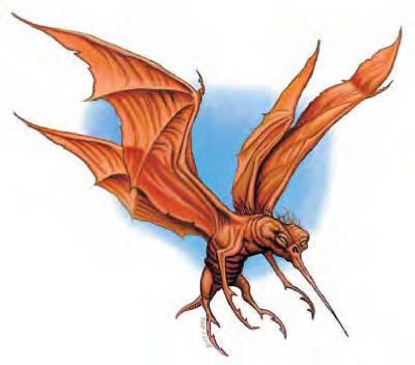

这种丑陋的生物长相介于蝙蝠与巨蚊之间。他有一对蝙蝠膜翼、毛绒绒的短小躯体、八只末端长有钳脚、具有关节的腿，以及针状长嘴。
蚊蝠是一种像蝙蝠的生物，以活物的鲜血为食。对大部分冒险者来说，一只蚊蝠不算什么危险，但一群蚊蝠就会构成可怕的威胁。
蚊蝠体色分布由锈红到红褐色，底部为污黄色。针嘴尖端粉红，接着色彩渐淡直至灰色的根部。
蚊蝠体长1英尺，翼展2英尺，重1磅。
| 生命骰 | 1d10（5HP） |
| 先攻 | +4 |
| 速度 | 10英尺（2格）、飞行40英尺（普通） |
| 防御等级 | 16（+2体型、+4敏捷）、接触16、措手不及12 |
| 基本攻击/擒抱 | +1 / -11（攀附时+1） |
| 攻击 | 接触+7近战（攀附） |
| 全力攻击 | 接触+7近战（攀附） |
| 占据/触及 | 2.5英尺 / 0英尺 |
| 特殊攻击 | 攀附、吸血 |
| 特殊能力 | 黑暗视觉60英尺、昏暗视觉 |
| 豁免 | 强韧+2、反射+6、意志+1 |
| 属性 | 力量3、敏捷19、体质10、智力1、感知12、魅力6 |
| 技能 | 躲藏+14、聆听+4、侦察+4 |
| 专长 | 警觉、武器娴熟B |
| 环境 | 热暖带沼泽 |
| 组织 | 群落（2-4）、成群（5-8）或一蓬（9-14） |
| 宝藏 | 无 |
| 阵营 | 总是绝对中立 |
| 进化 | ― |
| 等级修正值 | ― |
蚊蝠会停在受害者身上攻击，找寻弱点将针嘴刺入肉中。这种攻击方式视同接触攻击，且只能针对小型以下生物。
攀附（特异）：如果蚊蝠刺中（接触）敌人，则会用八只钳脚攀附在对方身上，视为擒抱。此时，蚊蝠的防御等级失去敏捷加值，AC为12，但可紧抓不放。蚊蝠在进行擒抱检定时具有+12种族加值（已列于数据中的基本攻击/擒抱字段中）。
敌人可以用武器或擒抱攻击攀附中的蚊蝠，若能擒抱成功并定住蚊蝠，就可以把它从攀附的敌人身上取下。
吸血（特异）：蚊蝠吸血，一旦攀附在敌人身上，每轮每回合开始时，可以造成1d4点体质伤害。体质伤害达到4点时，蚊蝠就会脱离敌人身体进行消化。如果在蚊蝠吃饱前受害者死亡，则蚊蝠会另觅新目标。